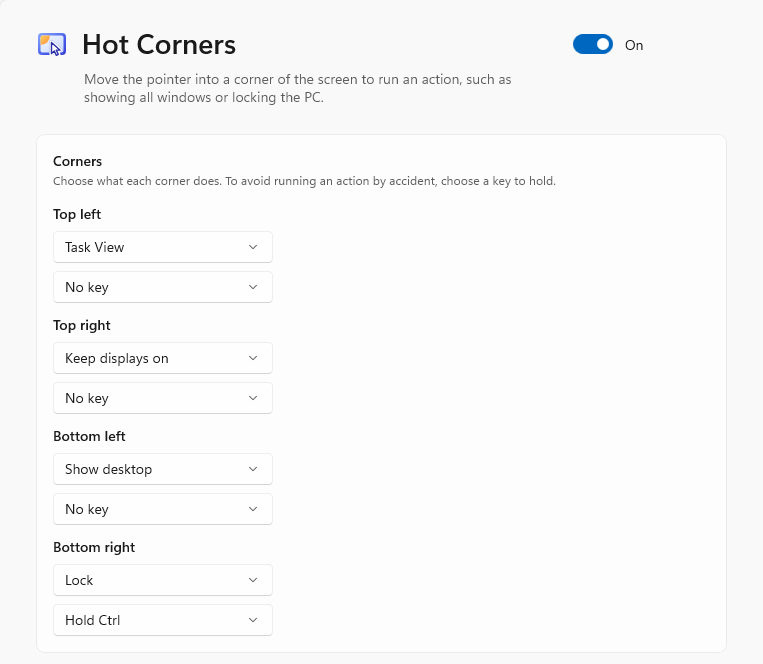
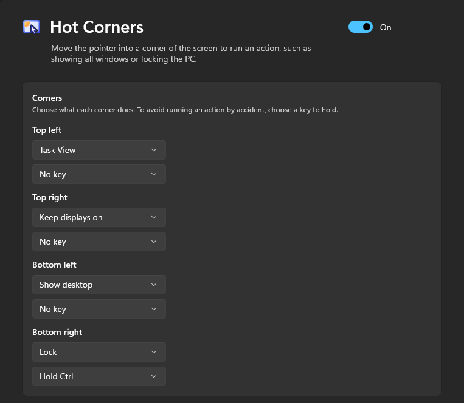

Input & Triggers
Hot Corners
Move the pointer into a corner of the screen to run an action. Inspired by Hot Corners in macOS, the Activities corner in GNOME and screen edges in KDE Plasma.
- Show Task View or the desktop, open Start, Search or Notifications, lock the PC, turn off the displays, start the screen saver, or run a program.
- Keep displays on holds off the screen saver and the display timeout while the pointer rests in its corner.
- A short delay, and optionally a key to hold, so corners don't trigger by accident.
- Corners stay quiet while you drag a window into them, while a game or virtual machine holds the pointer, and while an app is full screen on that display.
- Turn corners off while apps you choose are in front, and see on the page why a corner did or didn't trigger.

